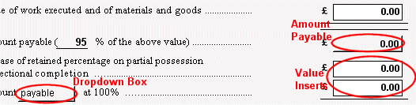
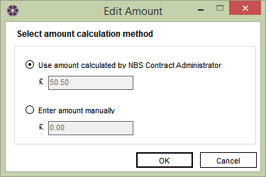
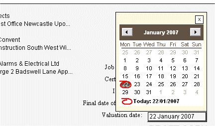

Editing a Certificate of interim payment |
The easiest way to complete an Interim Certificate in IFC 98 is to click in the Value inserts with your mouse and enter the correct figures.

There is also a dropdown box which requires an entry, click on the dropdown box with your mouse and select either payable or deductible.
The Amount Payable field is automatically populated using from the retention percentage, but you can amend this field to show your own figures. To manually enter the Amount Payable field, click on the button, an Edit Amount box will appear.

Click on the Enter amount manually radio button and enter the desired amount in the box. Click Ok to save and Cancel to close.
Valuation Date (present in IFC 98 and MW 98)

If the date that is shown as the Valuation date is incorrect, click on the date box and you can select a date from the calendar.
The Form Distribution list may also need editing, which can be accessed by clicking on the Distribution List tab. The user can select/deselect team members for inclusion on the form Transmittal Sheet by clicking on the checkbox in the send column. For more information on how to edit this, see Form Distribution List.
Each form in the active job has an associated Form Distribution list. Each of these are populated from the Global Distribution lists. For more information on this, see Global Distribution List. Please Note: Changes made in the Global Distribution lists will be reflected in the Form Distribution lists of any subsequently added forms.
See also:
Issuing a Form
Recalling forms
Spell Checker
Contract Administrator Guidance (helpful
advice and information about contract administration and communication)